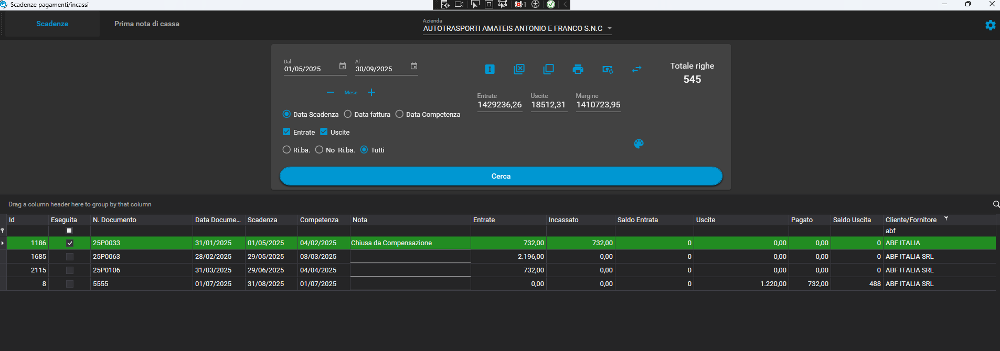
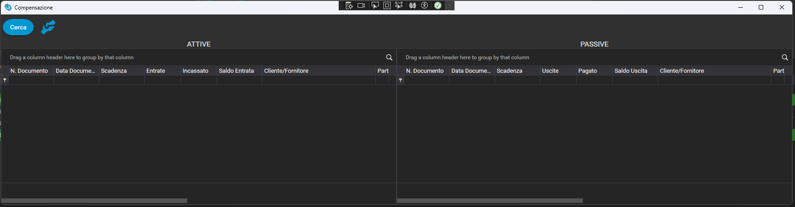

📦 Compensazione
- La compensazione avviene tra scadenze di fatture attive e scadenze di fatture passive, tra clienti e fornitori con la stessa partita iva.
- Per attivarla è necessario raggiungere il tasto delle impostazioni del modulo, e successivamente attivare ‘Attiva compensazione’, poi, salvare le impostazioni, ed infine riavviare il modulo scadenze pagamenti
- Sotto un esempio (pre filtrato) di un cliente e fornitore che vanno bene per la nostra prova, il tasto cerchiato in rosso apre la finestra di compensazione:
- Aperta la finestra di compensazione troviamo 2 griglie (SX = attive e DX = passive)
- La finestra compensazione, a sua volta mostra solo scadenze che possono essere compensate tra attivo e passivo, senza limiti di date. Una volta scelta una scadenza attiva e una passiva si preme il tasto ACCETTA (cerchiato di rosso), …, cosa succede adesso? Bhè, succede che il sistema trova il prezzo più basso tra le 2, crea una riga per ognuna di pagamenti e incassi con quel prezzo, quindi chiude automaticamente la scadenza che aveva quel pagamento o incasso più basso, mentre l'altra si porterà la differenza nelle partite aperte.
- La riga Attiva sparisce perché compensata del tutto (732 €), mentre a sinistra la riga mostra un pagato di 732 € ed un disavanzo di 488 €. 
- Quindi la scadenze attiva principale che aveva il prezzo più basso e compensato totalmente viene chiusa automaticamente e nella nota viene scritto ‘Chiusa da compensazione’, mentre l’ultima riga che non è stata compensata del tutto, non viene chiusa. La prima riga, quindi ha questo incasso,
- con una nota che ha una scrittura più dettagliata, ‘Compensazione fattura passiva n. …..’ Da qui, andiamo a chiudere definitivamente la riga passiva con un’altra scadenza
- Naturalmente gli importi a compensazione tengono conto anche di incassi e/o pagamenti già effettuati, quindi adesso il valore della passiva, non è più 1220, ma 488 (1220 – 732 della precedente). Il risultato, è che dal modulo di compensazione non si vedranno più scadenze da compensare, 
- perché non essendo più presenti scadenze passive, anche le attive verranno tolte, poiché non più compensabili. Questo è il risultato dell’ultima compensazione:
- e anche l’ultima scadenza viene eseguita in automatico, mentre sarà la terza riga di scadenza ad avere un nuovo incasso parziale:
- Durante la compensazione il sistema verifica che siano state scelte una sola riga della griglia delle attive (DX), ed una della griglia delle passive (SX), con controllo di appartenenza della stesso cliente/fornitore